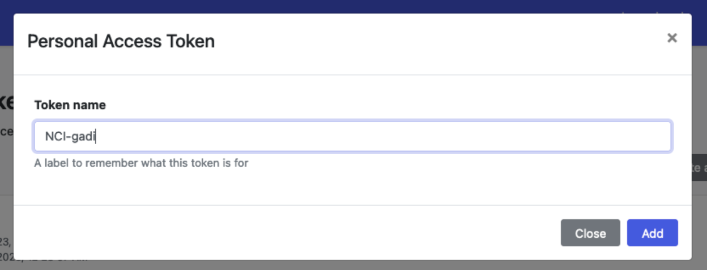
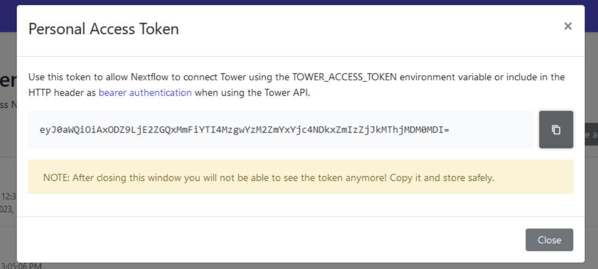
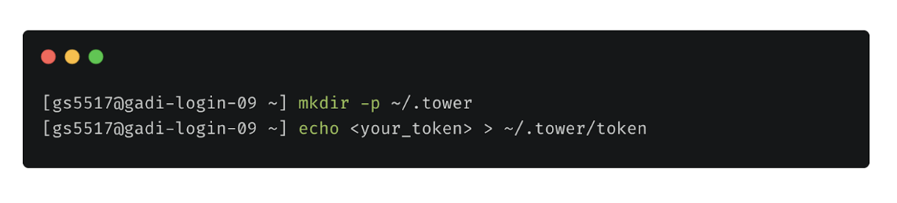
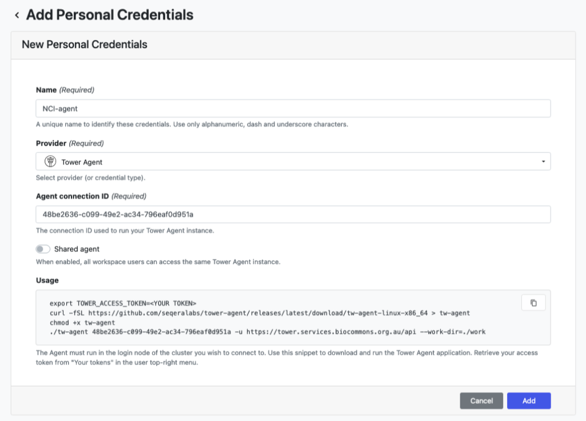
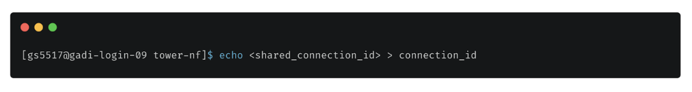
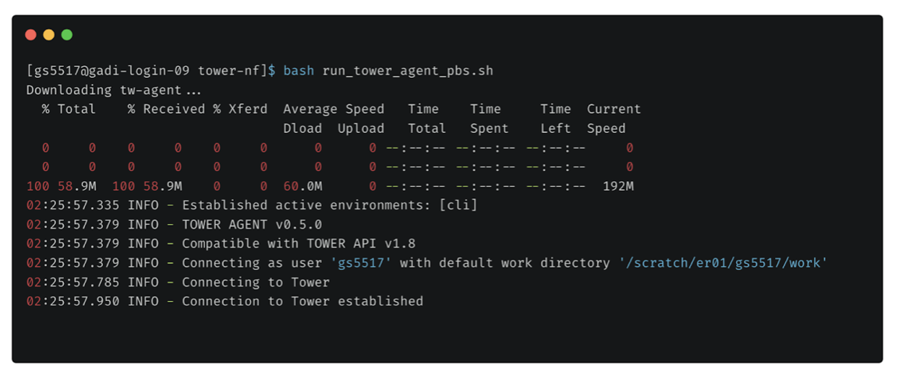
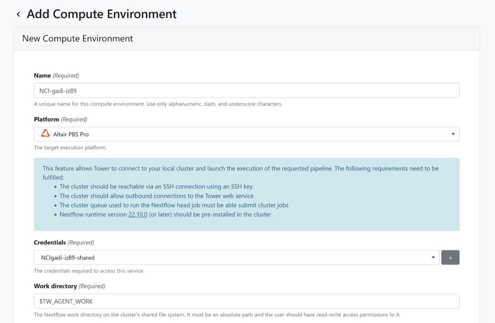
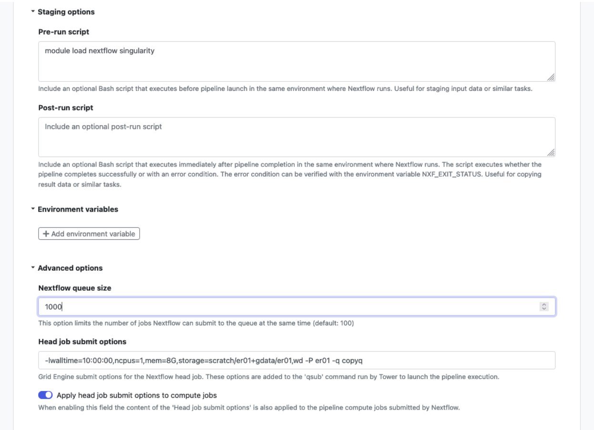

Setup for the Admin Role
Setting up your group’s workspace
Workspace configuration can only be performed by admins. With workspace configuration, you can create and configure compute environments, configure workflows to run on these environments, and add collaborators.
Create your personal access token
You will need to create a Tower personal access token and store it on your compute environment (i.e. on the HPC environment, not locally) in order to communicate with the Tower API. To create a personal access token you will need to navigate to the user settings logo in the top navbar and select ‘Your tokens’, then:
Select ‘Add Token’.
Name your token something descriptive and select ‘Add’: 
Copy the token to your clipboard: 
Open your terminal application, log in to your HPC (either NCI Gadi or Pawsey Setonix) on the command-line:
ssh abc123@gadi.nci.org.au- If you are using Gadi, navigate to
~($HOME):
cd ~- If you are on Setonix, navigate to
$MYSOFTWARE:
cd $MYSOFTWARE- From within the directory mentioned above, make a hidden tower (
.tower) directory to store Tower token and credentials:
mkdir .tower- Copy your personal access token into a file named token within this directory: 
Create a Tower credential for your HPC
You can create different types of credentials for different purposes through the Tower interface. For example, you can add credentials to access code repositories, commercial cloud, SSH-keys, and the Tower Agent. To connect your Tower agent to your HPC, you will need to create a Tower agent personal credential.
To set up your Tower agent credential, you will need to navigate to the user settings logo in the top navbar and select ‘Your credentials’.
You can either choose to work with a shared or personal credential. Setting this up requires a similar process to creating a personal access token, using both the command line and Tower interface. Starting on the Tower interface, navigate to ‘Credentials’ in the top navbar menu:
Select ‘Add Credential’.
Name the credential something descriptive.
Select Tower Agent from the Provider dropdown menu.
Enable ‘Shared agent’ so that all workspace users can access the same instance.
Copy the Agent connection ID to your clipboard. 
Before saving the credential you will need to run the agent on your HPC command line.
Log in to your HPC project space (same as above) on the command-line and navigate to the shared space where you’ll be running the tower agent from and create another hidden
.towerdirectory:
cd /g/data/project-code/Tower_runsmkdir ./towerCopy your personal access token into a file named
connection_idwithin the hidden.towerdirectory: Navigate to your Tower directory (not $HOME).
Download the Tower HPC helper scripts from github to this same space:
git clone https://github.com/Sydney-Informatics-Hub/tower-nf.git- Run the relevant
run_agentscript to run the tower agent. This script will automatically find your personal access token and shared workspace credential:
bash tower-nf/run_tower_agent_pbs.sh 
- Go back in the tower interface in your web browser, hit ‘Add’ to save your Tower agent credential.
- The tower agent has to run while you set up your workspaces or run a workflow. You can cancel the Tower agent running on the command line after the credential is saved using
ctrl+C
Configure a compute environment
- Run the tower agent on the HPC command line again with the relevant run_tower_agent_<pbs|slurm>.sh script, same as above.
- In the Tower interface, navigate to ‘Compute Environments’ in the top navbar menu.
- Name the environment something descriptive to distinguish it from other environments you may set up.
- Select the platform. For Setonix this is Slurm workload manager, for Gadi this is Altair PBS Pro.
- Provide your (shared or personal) credentials previously saved to the connection_id file. 
To set up your NCI Gadi HPC compute environment:
- Under Staging options add:
module load singularity nextflow - Under Advanced options specify:
- Nextflow queue size: 300 (as directed here)
- Head job options:
--Iwalltime=10:00:00, ncpus=1, mem=8G, storage=scratch/\<project\>+gdata/\<project\>, wd -P \<project\> -q copyq

NCI is currently working on solutions to improve the deployment of the Tower agent on Gadi. The above directions are subject to change. Currently, it is important that you leave the head and compute queue names empty, given jobs submitted to queues on Gadi are transferred to the exec version of each queue once running. The exec queue names are not visible to the Tower API so your jobs will fail to run.
To set up your Pawsey Setonix HPC compute environment:
- Under Work directory add:
\$TW_AGENT_WORK - The Launch directory should be in the
/scratchpartition, because this is where you should run workflows. For example,/scratch/project_id/user_id/sv_calling. - For Head queue name specify: work.
- For Compute queue name specify: work, unless you have a specific reason to select the long, highmem, or copy queue due to your workflow requirements.
- Under Staging options:
- Pre-run script: Here we load the needed system modules for running a Nextflow tower job. This currently includes the following modules, but the specific versions may change over time. You can check on the Setonix command line which module versions are available:
module load nextflow/23.04.1 singularity/3.8.6-nompi
- Pre-run script: Here we load the needed system modules for running a Nextflow tower job. This currently includes the following modules, but the specific versions may change over time. You can check on the Setonix command line which module versions are available:
- Under Advanced options:
- Nextflow queue size: Set to 1024.
- Head job submit options: This setting provides resources specifications for running the Nextflow head job. The main parameter you might want to change is `time`. You may need less than 24 hours walltime, in which case you can reduce the requested time:
--time=24:00:00 \--ntasks=1 \--tasks-per-node=1 \--mem=12G \--cpus-per-task=1
Add collaborators
Collaborators are users who are invited to an organizations workspace, but are not members of that organization. As a result, their access is limited to only within that workspace. New collaborators to an organization’s workspace can be added using the Participants.
To create a new team within a workspace:
- Go to the Participants tab of the top menu.
- Click on Add participant.
- Enter the Name of new participant. This person will have needed to log into tower before they can be added.
- Optionally, update the role associated with the participant of the organization members or collaborators.
There are five roles available for every workspace participant:
- Owner: The participant have full permissions on any resources within the workspace, including the workspace settings.
- Admin: The participant have full permission on the resources associated with the workspace. Therefore they can create/modify/delete Pipelines, Compute environments, Actions and Credentials. They can add/remove users to the workspace, but cannot access the workspace settings.
- Maintain: The participant can launch pipelines and modify pipeline executions (e.g. can change the pipeline launch compute environments, parameters, pre/post-run scripts and nextflow configuration) and create new pipelines in the Launchpad. The users cannot modify Compute Environments and Credentials.
- Launch: The participant can launch pipelines and modify the pipeline input/output parameters in the Launchpad. They cannot modify the launch configuration and other resources.
- View: The participant can view the team pipelines and runs in read-only mode.